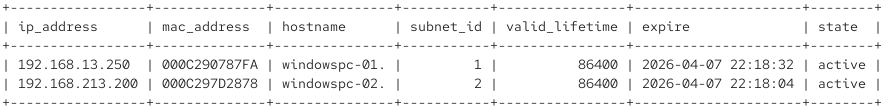
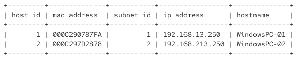

J'ai initialement appris la configuration d'un serveur DHCP sous linux avec le paquet 'dhcp-server'. Après un peu de recherche, j'ai découvert le paquet kea-dhcp qui remplace progressivement dhcp-server. J'ai donc entrepris de découvir son fonctionnement. Cette page documente la démarche à suivre pour configurer kea-dhcp4 avec et sans mariaDB.
Une première chose à savoir est qu'il utilise un fichier de configuration de type JSON. Il est aussi possible de le configurer conjointement avec une base de données relationelle. Cette fonctionalité permet de consulter les réservations actives en temps réel, un peu comme les logs du paquet dhcp-server. Il est aussi possible d'enregistrer les réservations dhcp avec des insertions dans cette base de données.
dnf install kea -y
# Installation pour utilisation avec mariadb :
curl -1sLf 'https://dl.cloudsmith.io/public/isc/kea-2-6/setup.rpm.sh' | sudo bash
dnf install -y isc-kea-dhcp4 isc-kea-admin isc-kea-hooks mariadb-server
Le fichier de configuration de kea pour le dhcp IPv4 est le /etc/kea/kea-dhcp4.conf. Comme énoncé plus haut, il s'agit d'un fichier JSON. La configuration suivante permet d'utiliser kea-dhcp sans base de données. Deux sous-réseaux sont configurés avec pools, options et réservations.
{
"Dhcp4": {
"lease-database": {
"type": "memfile",
"persist": true,
"name": "/var/lib/kea/dhcp4.leases"
},
"interfaces-config": {
"interfaces": [ "ens160","ens224" ]
},
"valid-lifetime": 86400,
"subnet4": [
{
"id": 1,
"subnet": "192.168.13.0/24",
"pools": [ { "pool": "192.168.13.200 - 192.168.13.250" } ],
"reservations": [
{ "hw-address": "00:0C:29:07:87:FA",
"ip-address": "192.168.13.250",
"hostname": "WindowsPC-01" }
],
"option-data": [
{ "name": "routers", "data": "192.168.13.1" },
{ "name": "domain-name-servers", "data": "192.168.13.1,8.8.8.8" },
{ "name": "domain-name", "data": "bixiville.net" }
]
},
{
"id": 2,
"subnet": "192.168.213.0/24",
"pools": [ { "pool": "192.168.213.200 - 192.168.213.250" } ],
"reservations": [
{ "hw-address": "00:0C:29:7D:28:78",
"ip-address": "192.168.213.250",
"hostname": "WindowsPC-02" }
],
"option-data": [
{ "name": "routers", "data": "192.168.213.1" },
{ "name": "domain-name-servers", "data": "192.168.13.1,8.8.8.8" },
{ "name": "domain-name", "data": "bixiville.net" }
]
}
]
}
}
Pour configurer le service avec mariaDB, il faut remplacer le bloc 'lease-database dans le fichier de configuration par les deux blocs suivants'
{
"Dhcp4": {
"lease-database": {
"type": "mysql",
"host": "localhost",
"name": "kea",
"user": "kea",
"password": "########",
"reconnect-wait-time": 3000,
"max-reconnect-tries": 5
},
"hosts-database": {
"type": "mysql",
"host": "localhost",
"name": "kea",
"user": "kea",
"password": "########"
},
…
…
Il faut ensuite créer l'utilisateur mariaDB
mysql -u USER -p --EOF
CREATE DATABASE kea;
CREATE USER 'kea'@'localhost' IDENTIFIED BY '########';
GRANT ALL PRIVILEGES ON kea.* TO 'kea'@'localhost';
FLUSH PRIVILEGES;
EOF
Puis on utilise l'utilitaire kea-admin pour initialiser la base de données (schéma)
kea-admin db-init mysql -u kea -p######### -n kea -h localhost
# Vérification de la syntaxe du fichier de configuration
kea-dhcp4 -t /etc/kea/kea-dhcp4.conf
# Redémarrage du service
systemctl restart kea-dhcp4.service
systemctl enable --now kea-ctrl-agent.service #Agent du service ()
# Vérification des baux en mode sans base de données
tail -f /var/lib/kea/dhcp4.leases
# Vérification des journaux
journalctl -e -u kea-dhcp4
Il faut reformater certaines informations pour pouvoir bien les visualiser. Voici une requête mariaDB qui permet de visualiser les baux actifs
mysql -u kea -p######### kea -e "
SELECT INET_NTOA(address) AS ip_address,
HEX(hwaddr) AS mac_address,
hostname,
subnet_id,
valid_lifetime,
expire,
CASE state
WHEN 0 THEN 'active'
WHEN 1 THEN 'declined'
WHEN 2 THEN 'expired'
END AS state
FROM lease4; "

Toujours via la base de données, il est possible d'insérer des enregistrements pour les réservations d'hôtes. Voici un exemple:
-- WindowsPC-01 on subnet 1 (192.168.13.0/24)
INSERT INTO hosts (
dhcp_identifier,
dhcp_identifier_type,
dhcp4_subnet_id,
ipv4_address,
hostname
) VALUES (
UNHEX('000C290787FA'), -- MAC 00:0C:29:07:87:FA
0, -- 0 = hw-address
1, -- subnet id
INET_ATON('192.168.13.250'),
'WindowsPC-01'
);
-- WindowsPC-02 on subnet 2 (192.168.213.0/24)
INSERT INTO hosts (
dhcp_identifier,
dhcp_identifier_type,
dhcp4_subnet_id,
ipv4_address,
hostname
) VALUES (
UNHEX('000C297D2878'), -- MAC 00:0C:29:7D:28:78
0, -- 0 = hw-address
2, -- subnet id
INET_ATON('192.168.213.250'),
'WindowsPC-02'
);
mysql -u kea -p######### kea < kea_hosts.sql
Cette requête permet de voir les réservations actives:
mysql -u kea -p######### kea -e "SELECT
host_id,
HEX(dhcp_identifier) AS mac_address,
dhcp4_subnet_id AS subnet_id,
INET_NTOA(ipv4_address) AS ip_address,
hostname
FROM hosts;"
